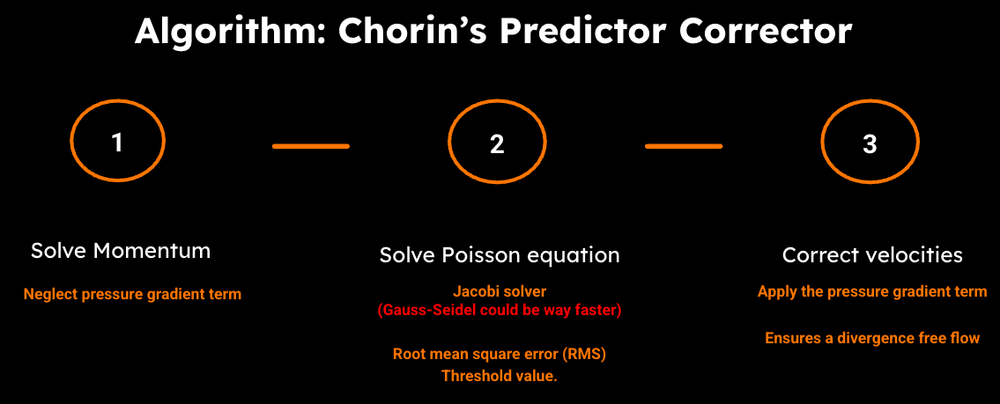

Algorithm
In this section, we outline and compare two different numerical algorithms employed to solve the incompressible Navier-Stokes equations: the unsplit 1st-order Euler's Method and the Fractional-Step Method. These algorithms differ in their sequence of operations and the way they integrate the pressure and velocity fields over time. I will explain and implement both methods and compare their performance and results in terms of accuracy and computational efficiency.
1st order unsplit Euler's method
The primary goal of this method is to ensure that the computed velocity field remains divergence-free (mass conserves) at each timestep. This is achieved through two main steps: pressure projection and advection-diffusion, which are alternated to ensure the incompressibility condition.
Step 1. Solving a Poisson equation for pressure at time \(t_n\) that includes
The first step is to solve the Poisson equation for the pressure, which is derived from the incompressibility condition \(\nabla^2 p = \nabla \cdot \mathbf{u}^*\). The ultimate goal is to calculate the pressure gradient that will ensure zero divergence when performing the advection-diffusion step.
Step 2. Advection-Diffusion with Pressure Gradient.
The advection-diffusion step updates the velocity field by incorporating the pressure gradient (\(\nabla p^*\)) obtained from the solution of the Poisson solver. This step ensures the incompressibility of the flow by adjusting the velocity field based on the pressure distribution, while simultaneously advecting and diffusing the fluid. The advection-diffusion equation, which includes the pressure gradient, is: $$ \mathbf{u}^{n+1} = \mathbf{u}^n + \Delta t \left[ -\frac{1}{\rho} \nabla p^* + \nu \nabla^2 \mathbf{u}^n - (\mathbf{u}^n \cdot \nabla) \mathbf{u}^n + \mathbf{f} \right] $$
Fractional-Step Method
Chorin's fractional step algorithm is a widely used method to solve fluid dynamics equations, particularly when dealing with incompressible flows. The idea is to perform the advection-diffusion step without considering the pressure gradient. This step gives us an intermediate velocity field that may not be divergence-free (it does not satisfy the incompressibility condition). Then, we correct the predicted velocity field to ensure incompressibility, using the pressure gradient computed from the Poisson equation.
Step 1. Advection-Diffusion Step.
In the prediction step, the velocity field is updated by solving the advection-diffusion equation without considering the pressure gradient term. This means that the velocity field evolves based on the advection of the fluid and the diffusion effects, but the incompressibility constraint is not enforced at this stage. $$ \mathbf{u}^{n+1} = \mathbf{u}^n + \Delta t \left[\nu \nabla^2 \mathbf{u}^n - (\mathbf{u}^n \cdot \nabla) \mathbf{u}^n + \mathbf{f} \right] $$ The result of this step is an intermediate velocity field that may not satisfy the incompressibility condition ∇⋅u=0.
Step 2. Solve the Poisson Equation.
This step involves solving the Poisson equation for the pressure field with the fractional velocity field (u*).
$$
\nabla^2 p = \nabla \cdot \mathbf{u}^{}
$$
The solution to this equation provides the pressure distribution required to compute the pressure gradient* that will be used to correct the velocity field in order to ensure that it is divergence-free.
Step 3. Pressure-Projection (Continuity) Step
After solving for the pressure p, we compute the pressure gradient which is the missing used to correct the velocity field. The corrected velocity field is computed by subtracting the pressure gradient term from the intermediate velocity: $$ \mathbf{u} = \mathbf{u}^ - \frac{\nabla p}{\rho}\Delta t $$ This method effectivelly ensures zero divergence* because the Poisson equation is solved for the actual velocity field.

Chorin's algorithm workflow. REDO THIS FIGURE WITH WHITE BACKGROUND.